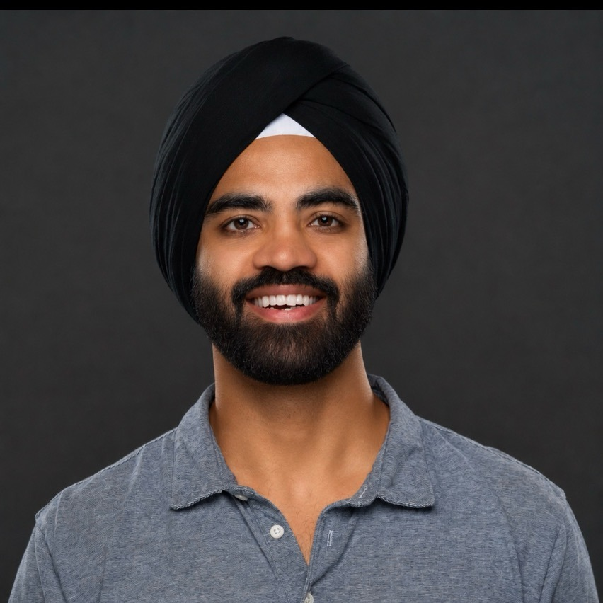

Vision Correction & Cataract Surgeon
Refractive & cataract surgeon.
A San Francisco Bay Area refractive and cataract surgeon offering the full spectrum of vision correction: EVO ICL, LASIK, PRK, SMILE, and premium cataract surgery. Alongside clinical practice, I build software and conduct research in AI.
Get in touch
About
I'm a refractive and cataract surgeon offering the full spectrum of vision correction: EVO ICL, LASIK, PRK, SMILE, refractive lens exchange, and premium cataract surgery. I completed a refractive surgery fellowship at Parkhurst NuVision under Dr. Gregory Parkhurst, principal investigator of the FDA EVO ICL trial and one of the country's highest-volume EVO ICL surgeons.
I offer the full range of vision correction so the procedure can be matched to the eye. Alongside clinical practice, I build software for refractive and cataract surgery and publish peer-reviewed research on ICL sizing and vault prediction.
What I do
EVO ICL
An implantable lens for strong prescriptions and thinner corneas. Reversible, and the focus of my research.
LASIK
Fast, predictable laser vision correction for suitable eyes.
SMILE
Flapless correction through a small incision.
PRK
No flap and a slower recovery; the right choice for certain corneas.
Refractive lens exchange
Replaces the aging natural lens for reading and distance vision.
Cataract surgery
Restores clarity with a premium IOL matched to the patient's goals, informed by IOL Reference.
Platforms: EVO ICL & EVO+ · excimer and femtosecond lasers · premium IOLs (monofocal, toric, multifocal, EDOF, light-adjustable). Lens selection draws on IOL Reference, the intraocular lens database I built and maintain, used by cataract surgeons worldwide.
Beyond the clinic
AI research
AI Research
My research and applied work in artificial intelligence, including machine learning and the evaluation of AI models in medicine.
Read more →AI ICL sizing
ICL Fit
Co-founder and lead engineer of ICL Fit. It predicts EVO ICL lens size and post-op vault, best-fit per eye.
icl.fit →Reference platform
IOL Reference
Creator of IOL Reference, the intraocular lens database used by cataract surgeons worldwide.
iolreference.com →Get in touch
For consultation inquiries, research collaboration, speaking, or media, email is best and I reply personally.